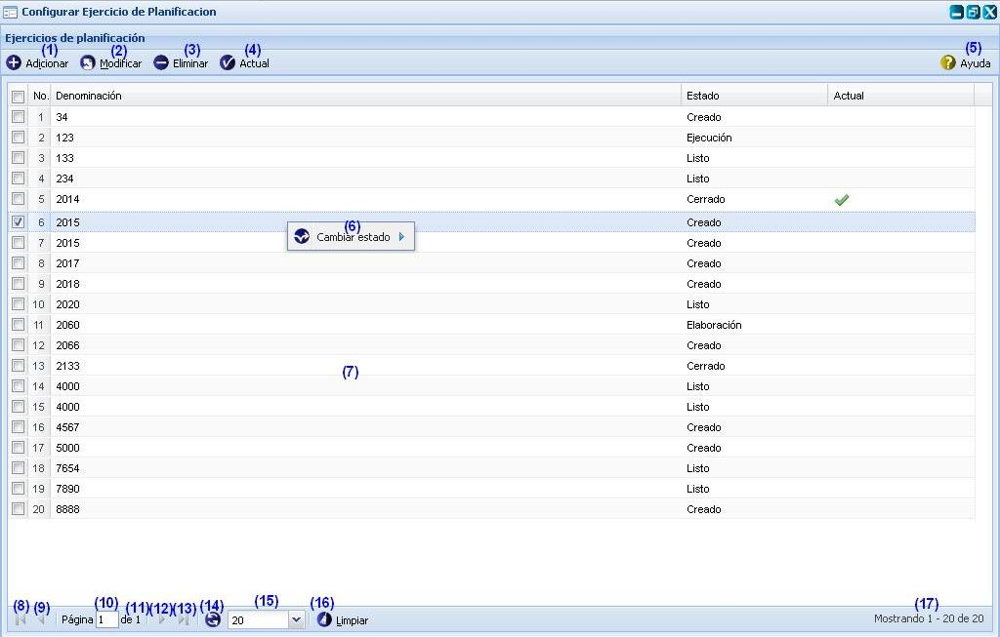
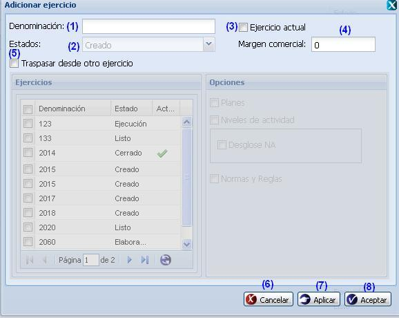
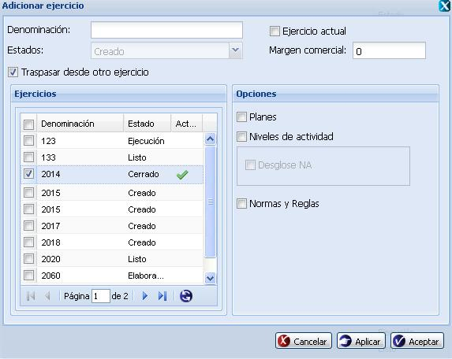
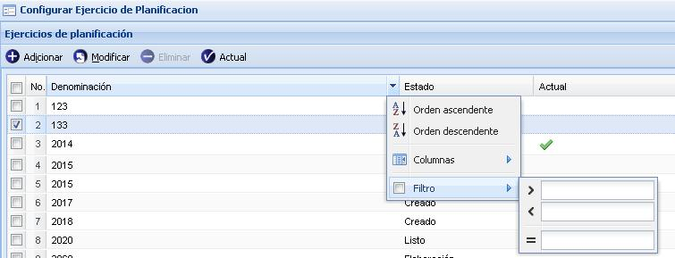

--Configurar ejercicio de planificación--
Para llegar a la funcionalidad se puede acceder a través de la opción Inicio/Planificación material/Configuraciones/Configurar ejercicio de planificación. El sistema le mostrará la interfaz que aparece en la figura 1.

Figura 1. Interfaz y acciones de la funcionalidad Configurar ejercicio de planificación.
Nota: El ejercicio de planificación solo puede pasar por 5 estados: Creado, Elaboración, Listo para ejecución, Ejecución y Cerrado, en ese mismo orden.
Las diferentes opciones que conforman la figura anterior permiten:
- Adicionar ejercicio de planificación, ver Adicionar ejercicio de planificación, esta acción permite adicionar un ejercicio de planificación, cuando se presione el botón Aceptar o Aplicar de la interfaz el sistema mostrará un mensaje de información notificando que se adicionó satisfactoriamente el ejercicio. Se puede acceder a esta funcionalidad con las teclas (Alt + I).
- Modificar un ejercicio de planificación previamente seleccionado en el listado. Una vez seleccionada dicha opción el sistema le mostrará la interfaz Modificar ejercicio con los datos cargados, posibilitando que se modifiquen los datos requeridos. Se puede acceder a esta funcionalidad seleccionando un ejercicio y oprimiendo las teclas (Alt + M). La validación de cada uno de los campos de la interfaz será muy similar al descrito en el Adicionar ejercicio de planificación. Además de tener en cuenta las validaciones de la funcionalidad Adicionar ejercicio, también es importante tener en cuenta las siguientes validaciones para ejecutar dicha funcionalidad:
- Si el ejercicio seleccionado se encuentra en estado Creado se podrán modificar todos los elementos del ejercicio en caso necesario. De estar en cualquier otro estado solo podrán modificar los datos de: Denominación y Estado.
- Si el ejercicio que desea modificar se encuentra en estado de creado, al seleccionar la opción Traspasar desde otro ejercicio, el sistema le eliminará toda la planificación efectuada para el ejercicio en cuestión, de forma tal que no se dupliquen elementos innecesarios y pueda volver a efectuar la planificación que realmente debería haber realizado. Al seleccionar dicha opción el sistema le activará dos paneles, el panel izquierdo Ejercicio y el panel derecho Opciones, en el panel ejercicio se le listarán cada uno de los ejercicios que han sido insertados con anterioridad en el sistema (excluyendo el ejercicio que se desea modificar), si selecciona uno el sistema le activará en el panel derecho Opciones con cada una de las funcionalidades donde se ha efectuado alguna planificación para el ejercicio seleccionado. Se procede a seleccionar la(s) opciones que se desea(n) traspasar para el ejercicio a insertar y se presiona la opción Aceptar o Aplicar de la interfaz. Una vez presionada una de estas opciones, el sistema le mostrará el mensaje de información: “El ejercicio de planificación ha sido modificado satisfactoriamente”, se acepta dicho mensaje y queda insertado el ejercicio definido.
- Eliminar un ejercicio de planificación previamente seleccionado en el listado. Esta acción permite eliminar el ejercicio de planificación deseado. Una vez seleccionado se procede a seleccionar la opción Eliminar de la interfaz, automáticamente se mostrará un mensaje de confirmación, que se puede Aceptar o Cancelar según sea el caso, de presionar la opción Aceptar el sistema le mostrará un mensaje de información sobre el éxito de la operación realizada, quedando eliminado el ejercicio de planificación seleccionado, si cancela el mensaje de confirmación, el sistema permanece en la interfaz principal y no elimina el ejercicio de planificación. Se puede realizar esta operación seleccionando el ejercicio en el listado y oprimiendo la tecla (Delete). Es importante tener en cuenta que el botón Eliminar solo se habilitará una vez seleccionado al menos un ejercicio de planificación que se encuentre en estado “Creado”, en cualquier otro estado, ya sea Elaboración, Listo para ejecución, Ejecución y Cerrado, el sistema no activará dicho botón.
- Establecer ejercicio de planificación como actual. Esta funcionalidad permite definir un ejercicio de planificación de los listados en la interfaz como Actual, para ejecutar la misma se procede a seleccionar un ejercicio de los listados en la interfaz y seleccionar la opción Actual, una vez presionada la misma el sistema le mostrará un mensaje de confirmación, se acepta el mensaje de confirmación y se muestra un mensaje de información sobre el éxito de la operación realizada, se acepta el mensaje de información y automáticamente queda defino el ejercicio seleccionado como actual. De presionar la opción Cancelar del mensaje de confirmación, el sistema cancela la acción y cierra la ventana. Para ejecutar esta funcionalidad es importante tener en cuenta las siguientes validaciones:
- La opción Actual de la interfaz principal solo se habilitará al seleccionar al menos un ejercicio de los listados en la interfaz.
- Si desea definir otro ejercicio como actual, que no sea el seleccionado con anterioridad, se procede a efectuar los pasos descritos anteriormente, una vez ejecutado los mismos el sistema le mostrará el mensaje de confirmación: “ ¿Está seguro que quiere definir el ejercicio seleccionado como actual? ”, se acepta el mensaje de confirmación y el sistema le mostrará el mensaje: “Ya existe un ejercicio definido como actual, ¿Desea cambiarlo por el seleccionado?”, presiona la opción Aceptar del mensaje y el sistema le muestra el mensaje de información: “ El ejercicio de planificación ha sido definido como actual satisfactoriamente ”. Si presiona la opción Cancelar del mensaje de confirmación, el sistema cancela las acciones y cierra el mensaje.
- Mostrar ayuda de la funcionalidad. Se puede realizar esta operación seleccionando la combinación de teclas (Alt + H).
- Cambiar estado a un ejercicio de planificación previamente seleccionado en el listado. Esta acción permite cambiar el estado de un ejercicio de planificación seleccionado por un estado anterior o posterior al que presenta, para ello se debe seleccionar el ejercicio de planificación al que se le desea cambiar el estado y presionar clic derecho (secundario) sobre el mismo. Una vez ejecuta dicha acción el sistema le mostrará la opción Cambiar estado, se desglosa la misma y el sistema le mostrará cada uno de los estados por el que puede pasar el ejercicio seleccionado, se procede a seleccionar el estado para el cual desea pasar el ejercicio y el sistema le mostrará un mensaje de confirmación, que se puede Aceptar o Cancelar según sea el caso, de presionar la opción Aceptar el sistema le mostrará un mensaje de información sobre el éxito de la operación realizada, quedando cambiado el estado del ejercicio seleccionado, si cancela el mensaje de confirmación, el sistema cancela las acciones y no cambia el estado del ejercicio. Para ejecutar esta funcionalidad es importante tener en cuenta las siguientes validaciones:
- Al desglosar la opción Cambiar estado, solo se le listarán los estados para el cual puede pasar el ejercicio seleccionado, ya sea un estado anterior o siguiente al que presenta el mismo.
- El ejercicio de planificación solo puede pasar por cinco estados: Creado, Elaboración, Listo para ejecutar, Ejecución y Cerrado en ese mismo orden.
- Listado de ejercicios de planificación insertados en el sistema.
- Ir a la primera página, mostrando los primeros ejercicios.
- Ir a la página anterior.
- Muestra el número de la página donde se encuentra, se puede introducir el número.
- Muestra el número máximo de páginas.
- Ir a la siguiente página.
- Ir a la última página.
- Actualizar el listado de ejercicios de planificación.
- Cantidad de ejercicios a mostrar por páginas.
- Limpiar filtro(s). Esta acción limpiará todos los criterios de búsqueda, deshabilitando los filtros realizados. Se puede realizar esta operación seleccionando la combinación de teclas (Alt + L).
- Mostrar la cantidad de resultados encontrados.
Adicionar ejercicio de planificación
Para adicionar un ejercicio de planificación se presiona el botón Adicionar de la interfaz, ver figura 1. Una vez seleccionada esta opción se muestra la interfaz correspondiente para realizar la operación como se muestra a continuación, ver figura 2 .

Figura 2. Interfaz Adicionar ejercicio de planificación.
Las opciones de la figura anterior permiten:
- Introducir la denominación del ejercicio que desea insertar.
- Mostrar el estado que presentará el ejercicio a insertar. En este caso le mostrará la palabra Creado, pues este es el primer estado por el que debe pasar un ejercicio.
- Seleccionar si desea insertarlo como ejercicio actual o no. Este campo no es obligatorio.
- Introducir el margen comercial que presentará el ejercicio a insertar. Este campo no es obligatorio.
- Seleccionar si desea traspasar la planificación efectuada desde otro ejercicio para el ejercicio a insertar en el sistema. Este campo no es obligatorio. De seleccionar dicha opción el sistema le mostrará los paneles Ejercicios y Opciones habilitados, ver figura 3, una vez habilitados los mismos el sistema le mostrará en el panel izquierdo Ejercicios un listado de los ejercicios insertados con anterioridad, se procede a seleccionar uno de los ejercicio listados y se mostrará en el panel derecho Opciones cada una de las funcionalidades donde se ha efectuado alguna planificación para el ejercicio seleccionado. Se procede a seleccionar la(s) opciones que se desean traspasar para el ejercicio a insertar y se presiona la opción (5), (6) o (7) según sea el caso.
- Cancelar las acciones y salir de la interfaz sin guardar los datos.
- Guardar los datos y limpiar los campos de la interfaz, permitiendo adicionar otro ejercicio de planificación.
- Adicionar el ejercicio de planificación al listado y cerrar la interfaz.
Figura 3. Interfaz Adicionar ejercicio de planificación.

Validaciones
- Los campos Denominación y Estado, son campos obligatorios, en caso de dejar alguno de estos campos vacíos, el sistema le mostrará el mensaje de información: “Existen campos vacíos o con valores incorrectos”. Se acepta el mensaje de información y el sistema le mostrará el mensaje de error: “Este campo es obligatorio”, al pasar el cursor por dicho campo.
- El campo denominación acepta caracteres alfanuméricos hasta 70 caracteres, en caso de introducir algún carácter especial y presionar el botón Aceptar o Aplicar se debe mostrar el mensaje “Existen campos vacíos o con valor(es) incorrecto(s).” y en el mismo campo “Solo admite caracteres alfanumérico.” Y si sobrepasa la cantidad establecida se debe mostrar en el mismo campo el mensaje “El tamaño máximo requerido es de 70 caracteres.”.
- El campo Margen comercial, solo admite números hasta 3 dígitos y el carácter especial (“.”). De presionar la opción Aceptar o Aplicar el sistema le mostrará el mensaje de información: “Existen campos vacíos o con valores incorrectos”, se acepta el mensaje de información el sistema le mostrará el mensaje de error: “Solo admite números y el carácter especial (.).”.Y si sobrepasa la cantidad establecida se debe mostrar en el mismo campo el mensaje “El tamaño máximo requerido es de 3 caracteres.”.
- Si presiona la opción Ejercicio actual, el sistema pondrá el ejercicio a insertar como actual, de forma tal que indique que sobre ese ejercicio es que se va a efectuar toda la planificación, de ya existir en el sistema un ejercicio con esta condición, se cambiará el ejercicio que se encuentra determinado como actual en la interfaz principal, por el que fue insertado.
- En el panel Opciones se listarán las opciones: Planes, Niveles de actividad, Desglose NA (Desglose de niveles de actividad) y Normas y reglas en dependencia del ejercicio seleccionado. La opción Desglose NA solo se le activará si selecciona la opción Nivel de actividad y a su vez para el ejercicio seleccionado existe algún desglose definido.
- No se permite adicionar un ejercicio con igual denominación. Si esto ocurre el sistema debe mostrar el siguiente mensaje de error: “Ya existe un ejercicio registrado en el sistema con esta denominación.”. Se acepta el mensaje de información y se mantiene en la interfaz para introducir una denominación diferente.
- Si el ejercicio que desea adicionar es el primero a registrar en el sistema, la opción Traspasar desde otro ejercicio no se podrá seleccionar. Esta solo se podrá seleccionar si ya existe al menos un ejercicio con alguna planificación definida en el sistema.
Buscar ejercicio de planificación
Se presiona clic en el botón que aparece en la parte derecha de cada columna, ver Figura 4.

Figura 4. Búsqueda por filtrado de columnas de la interfaz.
Se despliega la columna y se ofrece la posibilidad de realizar búsqueda mediante filtrado. Se introduce o selecciona el criterio de filtrado según la información que brinde la columna seleccionada. Inmediatamente se presiona la tecla Enter y el sistema mostrará en la interfaz los ejercicios de planificación según el criterio de filtrado seleccionado. En caso de que no exista ejercicios de planificación a mostrar para el criterio de filtrado seleccionado el sistema le notificará mostrando el siguiente mensaje de información: “No existen datos que se correspondan con los criterios de búsqueda especificados.”.